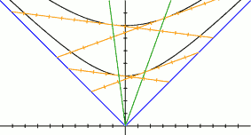

Эквивалентность систем отсчёта
В этой заметке я постараюсь убедить читателя в эквивалентности всех инерциальных систем отсчёта.
Давайте снова обратимся к уже знакомому рисунку, на котором показаны два наблюдателя: неподвижный и движущийся со скоростью 1/2.
На первый взгляд может показаться, что их системы координат не похожи. Их одновременные пространства не совпадают, отрезки, отвечающие равным интервалам времени для них не равны (с нашей точки зрения, но не с точки зрения интервалов пространства-времени).
На самом деле, общая теория относительности не противоречит принципу относительности Галилея, который утверждает, что все инерциальные системы отсчёта неразличимы.
Инерциальными называются такие системы отсчёта, где координата отсчитывается от тела, движущегося равномерно и прямолинейно. Наши наблюдатели именно так и движутся и задают именно такие системы, отсчитывая координату от своего положения.
Давайте сперва определим, какие элементы нашего рисунка не зависят от наблюдателя (остаются неизменными, не зависимо от того, движется наблюдатель или нет).
Мы уже видели, что световой конус воспринимается обоими наблюдателями одинаково. Но это не единственное сходство. При переходе из одной системы в другую неизменными остаются и линии равного времени.
В этом есть простой геометрический смысл. Вспомните, как мы строили линии равного времени. Для их построения мы не рассматривали никаких наблюдателей, это просто линии, точки которых равноудалены (в представлении пространства-времени) от начала координат (от точки старта наблюдателей).
На самом деле световой конус тоже является линией равного времени, на которой время равно нулю. Его можно было бы обозначить «t=0». Световой конус состоит из точек, находящихся на нулевом расстоянии от начала координат. Именно потому фотоны не ощущают течения времени.
Обратите внимание и на тот факт, что с точки зрения покоящегося наблюдателя, движущийся также перемещается со скоростью 1/2. В момент времени A (через 8 секунд) покоящийся наблюдатель «увидит» (в своём пространстве, конечно), что движущийся находится в точке С (на расстоянии 4).
Аналогично движущийся наблюдатель через те же 8 секунд (в точке В, ведь движущийся наблюдатель измеряет время своими часами) увидит, что покоящийся наблюдатель удалился от него на 4 единицы и находится в точке D.
Таким образом каждый будет считать, что другой удаляется от него со скоростью 1/2. Каждый будет считать, что свет разлетается со скоростью 1. И каждый может считать именно себя покоящимся.
Больше того, если эти наблюдатели наладят некую связь и начнут сравнивать дынные любых экспериментов, то они не смогут найти отличий и определить, кто же движется на самом деле.
Я не хочу приводить здесь всю необходимую математику (которая заключается лишь в различном комбинировании квадратов интервалов) и строго доказывать полную эквивалентность систем отсчёта движущегося и покоящегося наблюдателей.
Вместо этого я приведу рисунок, который позволит вам попеременно вставать на точку зрения каждого из наблюдателей, каждый из которых считает, что покоится именно он.

Анимированное изображение см. в прикрепленном файле.
Обратите внимание, что линии равного времени и световой конус остаются неподвижными. Это происходит не потому, что я поленился рисовать их движения, а потому, что они не изменяются при переходе из одной системы отсчёта в другую, как было сказано выше.